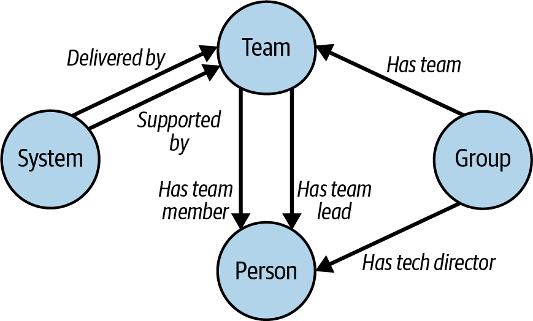
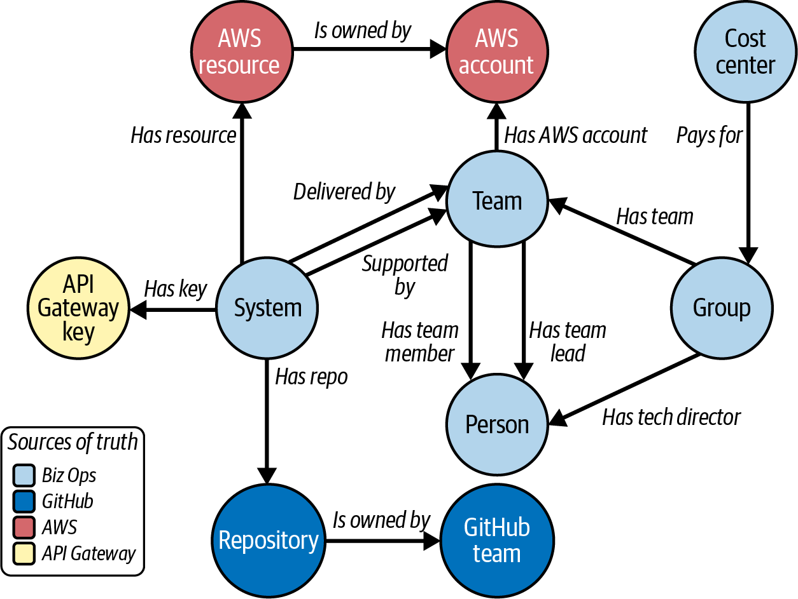

In this chapter, I want to make the case for strong and active ownership of microservices. Strong, meaning that a service is owned by a team and its members decide what changes can be made to it. Active, meaning that dependencies get upgraded, alerts are monitored, and security vulnerabilities are patched. There is work involved in any code that is still running in production, even after the service is no longer under active development.
I will also make the case for knowing your estate. This is especially important when you have large numbers of services. I’ll share the key decisions we made when building Biz Ops, the tool the FT built to track our systems and teams and make sure we knew who owned what, and I’ll highlight the important aspects to consider when choosing your own solution.
It’s important to have this strong foundation in place, because things change. It’s pretty rare for an organization to have the same structure for more than a few years. Maybe the business environment changes, or you start to focus more on one product over another. Also, you can and should be reviewing things periodically to look for the pieces that don’t fit, where a service should be part of another domain or owned by another team. You’ll need to understand how to transfer ownership of a service, and I’ll make some suggestions for doing this effectively.
Finally, I want to talk about what to do if you are struggling with an estate where you don’t have a clear idea of who owns what. What are the steps to incrementally make this better?
Let’s kick things off by exploring a use case of how active ownership and knowing your estate can make your life better.
In December 2021, a critical zero-day vulnerability (“Log4Shell”) surfaced in log4j, a Java logging utility used very widely in Java applications, and in frameworks used to build Java applications. Log4Shell allowed an attacker to execute arbitrary code on a remote server if they were able to pass in a log message to a system: for example, the log message could be a URL, and log4j would fetch the URL and run any executable payload using the privileges of the main program.1
Zero-day means that a vulnerability has been disclosed before a patch is available, meaning it can be exploited until a software patch that fixes it is published and applied to vulnerable systems.
At the Financial Times, Java isn’t being used for active development of new systems. However, the company used to write pretty much everything in Java, including many of our early microservices, and some of those systems were still running. These early microservices were not under active development, given they were written six or seven years previously.
We knew those legacy systems were at risk, and responding to Log4Shell was possible because every service at the FT had a record in a tool called Biz Ops. Biz Ops is built on a graph of data that links systems, teams, and people.
Because the data is stored as a graph, it has been extended with other interesting information, including source code repositories in GitHub. When Log4Shell happened, we ran a GraphQL query to find the systems written in Java and the teams that owned them.
This gave us a good list to start working through to make sure that all these systems got patched with a new version of log4j. We were able to get started on this before any of the automated tools we had in place for security scanning had updated to scan for the vulnerable version of log4j.
But that wasn’t all we needed to do. Java allows transitive dependencies—dependencies of your dependencies—which means that if you depend on a library that has an unpatched version of log4j, you are still vulnerable until that is patched, or until you declare an explicit dependency on log4j, which will override any transitive ones.
You can find that out by analyzing the dependency tree, and we asked teams with affected services to do that.
Finally, we got in touch with third parties that we knew used Java, and where they had access to our data, asked them whether they were affected and whether they had patched their systems.
None of this was quick, and lots of people had to take action. But it would have been a lot harder for us if we hadn’t had particular things in place.
We had broad agreement that every service had to be owned by a team. Services need to be owned by teams, rather than people, because when something goes wrong, you don’t want to find the owner is on holiday for a week.
We had a central system that tracked which teams owned each service. Importantly, other linked information was also available, so we could link a repository to a system and so on to the owning team.
Every team understood that they were accountable for taking action for the services they owned.
We also had a central platform and enabling group who stepped up and ran this like they would an incident, so that the company knew the current status of our efforts to mitigate this. That included communication to everybody in the technology department to explain that this was going to impact whatever the teams had been planning to do during this period.
All these things were in place because we invested in understanding our estate and making sure we knew who owned what. We did that because we learned from painful experience.
There are always parts of a system that aren’t as well understood as other parts. In a monolithic architecture, there will be packages within the code that no one has made changes to for a long time, where any incident would probably mean reading code and documentation (if it exists).
Once you add in a microservice architecture, it gets more complicated. That piece of code that no one understands is deployed independently, through its own deployment pipeline, and it may use different tech.
We had several incidents at the FT where we struggled to work out what systems were even supplying the functionality people had noticed was no longer working.
To quote my colleague Greg Cope, one incident involved “A tool dating from before the trees that built the ark. Unowned, unknown and worth £250K of business. One day it fell over.” The operations team found some documents from 1999, but that was it.
If you don’t understand what you have in your estate and you don’t make sure it is owned by a team, you can find out that, for example, every image that appears on the website relies on one person, who’s just left the company!
In 2017, Equifax, a major consumer credit reporting agency, found that hackers had breached its systems, gaining access to sensitive data including Social Security numbers for 143 million users. The CEO, CIO, and CSO all lost their jobs.
The cost to the company has been huge, with a $650 million settlement in the US just the start of the costs they’ve incurred.
The cause of the hack was a vulnerability in Apache Struts, an open source Java framework, which Equifax failed to patch promptly. The vulnerability was published in March 2017, and the attackers breached unpatched Equifax servers between May and July that year.
Equifax knew about the vulnerability, and sent out an internal notification asking that people upgrade the affected version of Apache Struts. That didn’t happen, and internal scans looking for vulnerable systems didn’t find the unpatched instances.2
Not knowing what is in your estate, and not having owners who feel accountable for your systems, can be costly.
One of the implications of “You build it, you run it,” which we covered in Chapter 8, is around ownership of services: it’s hard to be responsible for a service in production unless you really own that service.
Ownership should apply at a team rather than individual level. There’s a temptation to say, “Claire built this service, it doesn’t need much support, she can own it” but that is risky. What if Claire is on holiday when the service needs an urgent security patch? What if Claire quits? And also, what if Claire moves teams: how does Claire balance work for this service against the work her team is currently prioritizing?
While a service is under active development, with new features being added and active improvements made, there are three types of ownership that can apply:
The service is owned by a team and only that team can make changes to it.
The service is owned by a team but other teams can submit changes.
Any team can make changes to the service.
Let’s explore each of these forms of ownership further.
With strong ownership, the service is owned by a team, and its members are the ones who decide on what code changes and when.
If another team needs a change made to a feature, it has to ask the owning team to do it. If the service boundaries were chosen well, and the services in the system are loosely coupled, this should happen infrequently.
Strong ownership supports the autonomy of the team, as well as their speed to deliver business value because they don’t have to coordinate with other teams to get their work done. With strongly owned services, you typically allow more variation in technology, coding style, etc., because the decisions made for this service aren’t going to impact other teams (of course, you may constrain choices to allow people to move from team to team or to make it easier to manage the software estate and deal with risk).
If you support your service in production, strong ownership means you are supporting the consequences of your own choices. Sometimes you’ll get things wrong, but at least you got to make that decision!
With weak ownership, the service is still owned by a team, but other teams can make changes to it, usually by raising a pull request and having it reviewed by the owners.
There are challenges around this. Let’s imagine a scenario: a PR is raised, with no warning, against your service’s codebase, and the team that raised it needs it merged to make progress on the feature they are building that is meant to go live by the end of the week. The team members made some decisions that go against the way your own team tends to build things, but to fix that, they’ll have to make big changes to the PR. And you too are right in the middle of a critical piece of work and can’t really spend the time to do a proper review.
Weak ownership can leave you with a much less consistent codebase, and teams that feel all they ever do is review PRs raised by other teams, while still being on the hook to support the service in production.
Research carried out in 2016 shows that software components with many minor contributors—defined as developers who have made less than 5% of the commits to that component—have more defects. This makes sense, because these contributors aren’t likely to have deep knowledge of the codebase or the domain.
Weak ownership can work if you have loosely coupled services and therefore there aren’t too many changes coming from outside the owning team. However, I have seen it get introduced because there are many changes a non-owning team wants made in a service and the owning team isn’t getting around to them: usually, it’s a sign that there is contention around the service and that it isn’t loosely coupled. In that scenario, I would aim to look again at the boundaries to see if they can be aligned in a way that lets the teams that want to raise changes own the relevant parts of the codebase.
There are situations where weak ownership of a repository is exactly what you want. For example, if you are the owners of common tooling and you want other teams to be able to manage their configuration for that tooling as code, having them submit PRs is a very effective technique.
One final note about weak ownership is that this is one part of “inner sourcing”. This is the concept of using techniques learned from open source inside an organization, benefiting from increased communication, knowledge sharing, and consistency. Personally, I’m unconvinced by this particular aspect of inner sourcing. If you want teams to be able to work effectively, with a fast flow of value, you need to find ways to reduce dependencies rather than increase them!3
With collective ownership, anyone can make a change to the service, and no single team owns it.
There are quite a few challenges around collective ownership. Who gets to make decisions, for example, on coding style or frameworks? Who is accountable for fixing issues or upgrading things?
Collective ownership generally means you have a relatively high number of contributors to each source file (and so, more minor contributors, with the increased likelihood of bugs mentioned in the previous section). Research on contributions to the Linux kernel found code with nine or more contributors to it was 16 times more likely to have a security vulnerability than code with fewer than nine contributors, indicating that many developers changing code may have a detrimental effect.4
Collective ownership is generally the way of things when you have multiple teams working on a monolithic system, and it requires careful coordination to make sure that, for example, you don’t have two teams making changes to the same part of the codebase for two different reasons and end up with a release that pulls through some unintended changes.
I see microservice architectures as a response to the challenges of collective ownership: a microservice should be owned by one team so that you get the autonomy to move fast.
If you still have a monolith within your software estate, and that’s quite likely as you move toward microservices, you do need to accept some collective ownership: upgrades need to happen as a big bang across the codebase, and similarly releases involve the whole codebase. You can still define owners for specific parts of the monolith, with support in tools like GitHub for defining code owners for parts of the repository and requiring them to approve code changes.
One place where you can see collective ownership creeping into a microservice architecture is for shared libraries. Coming from a monolith, with don’t repeat yourself (DRY) at front of mind, you might do what we did at the FT and create a shared library that represents a content model. The issue is, you couple all the services using that model together. When you add a field to it, you need to release all the other services, or deal with version drift. We removed that shared library and coded each service to look just for the fields in the model that the service needed, and it made our system far less brittle.
In microservice architectures, duplication can be the right approach. I would tend to create a library only for code that isn’t likely to change: for example, a library for setting correlation IDs on request headers. Once you’ve got that working, it isn’t likely to need amendments.
For microservices, collective ownership is not a great idea.
It’s usually pretty easy to work out who owns a microservice that is under active development, with new features being added and active improvements being made: you can look at the commit history to find the people making changes to the repository, then work out what team they are on. The challenge is when this microservice has been around for a few years and is pretty stable, with no new changes being made. The team that built it may have been disbanded, or moved to work on new things. Maybe none of the developers who committed code are still working for your company!
What happens if there is a security vulnerability in one of the libraries this service uses? In the worst-case scenario, no one realizes, because no one even knows this library is being used. But even if someone flags that this library needs patching, if no one owns the service, who is going to do that work?
Any service that is running in production will have things that need to be done to keep it running and to keep it in a good state.
This is still true for services that are feature complete. You may discover a security vulnerability in a dependency, which you need to patch. You may need to upgrade the database the service uses, and that might be a breaking change requiring code changes.
I have seen three types of ownership for services no longer in active development, which I will discuss in the following sections:
The service no longer has an agreed owner and any work done on it is ad hoc.
The service is owned, in theory, but the owning team doesn’t feel accountable for the service and may not know very much about it.
The service is owned and the owning team takes accountability for it.
If you don’t make an effort, you will end up with services that no team really owns. It’s pretty easy to get into this state. It can happen simply because the team got disbanded after the service got delivered, and there was never a discussion about who would pick up ownership.
This approach is attractive in terms of cost, and not having to do tedious work, but there is a lot of risk in having unowned services. They can be vulnerable to security issues because they end up on an out-of-date tech stack, and if something does go wrong with the service, you can really struggle to fix the issue. For example, you can find that the service is written in a language or uses a framework that no one is really familiar with.
You may be able to mitigate some of the risk if you have a good insight into the things that exist in your estate. It’s better to have an unowned service that you know about, and where you know what the tech stack is! However, there is still a challenge when something goes wrong: who needs to react?
There’s a team associated with the service but they don’t feel accountable for it. The members don’t know the codebase, they aren’t doing upgrades and patching, and if something went wrong in production, they would struggle to deal with it.
At the FT, as we built a service catalog, one of the things we prioritized was having every service owned, and owned by a team. But having a team name linked to a service didn’t guarantee it was being actively owned.
Nominal ownership is better than no ownership, because there is at least a team that can be asked to pick up issues and maintenance. The risk is that no one knows that the service isn’t being actively owned. Often, we only found out that a service was nominally owned when something went wrong.
The service is owned by a team that feels accountable, even though they aren’t doing any active development on this service. The team picks up anything that needs to be done to keep this service running safely and securely in production.
If you don’t have active ownership, over time you end up with a service that no one really understands, running on out-of-date software. Worse, you may not even realize you have a security vulnerability in the service, because no one is paying attention.
When services like that fall over, the incidents tend to be very painful and protracted.
Active ownership is an investment: there is effort involved, and that means that there is a practical limit on how many services a team can own. That can mean it’s a challenge to persuade people to move to this model.
Later in this chapter, I’ll talk about what to do if you’re struggling with many unowned services, and how to make the business case for active ownership. Here, I just want to say that in a microservice architecture, you should be aiming for strong and active ownership of services.
So, what exactly do I think is involved in actively owning a service?
Active ownership means keeping a service in good health, whether or not it is currently under active development.
You’ll need to define exactly what active ownership means for you in your organization. This is somewhere that guardrails can really help—see Chapter 11 for more.
The definition of active ownership should include at least the following aspects:
Making code changes required because of changes elsewhere. For example, where an API has been deprecated.
Making sure that the service isn’t running on out-of-date or vulnerable software or hardware.
Moving to use a new database, library, or framework. For example, if the organization moves to a new source control or observability vendor.
Responding when something goes wrong in production, which can happen even for a service that’s been running without problems for years.
Ensuring that documentation is regularly reviewed to make sure it can still be found and is still relevant.
Let’s take a closer look at each of these elements.
Beyond writing code to solve business problems, there are code changes you need to do because of someone else’s plans. For example, if you call another service and it deprecates the API endpoint you are using, or makes a breaking change, you need to be able to migrate your service and release a new version, ahead of whatever deadline applies.
For a service that you aren’t doing a lot of work on now, it’s possible that another team will be prepared to make the change for you. If I was on the team that owned the service though, I would still want to review the change—as we would then be supporting the amended code in production.
Modern software, and microservices in particular, is made up of a lot of different components, all of which may need to be upgraded or patched.
A team that owns a service needs to keep track of the lifecycle of the software their service depends on so they know when things need to be upgraded, and the team needs to be aware of and respond to security vulnerabilities.
Chapter 14 covers this challenge in a lot more detail, with suggestions on how to keep this effort to a minimum (essentially, rely as much as possible on managed services and SaaS, and automate things wherever you can).
Sometimes, you need to do something beyond an upgrade. You need to migrate from one tool or library to another—for example, maybe you need to change database or hosting platform.
There are two scenarios here. The first is where it isn’t your decision. For example, the central team that manages a particular capability—for example, DNS, cloud computing, the CDN—has a plan to move to something different. That might be because of cost, risk, or because there is a new option available that is better overall for the organization even though it is a pain for your team.
Hopefully, the team will give you a decent amount of notice. Even better, they help you do the migration. It is also worth asking what happens if you can’t do the migration; could you stay on the old solution for a while? Forever? It is definitely worth asking. For example, if you know you are rebuilding your services in a year’s time, then a migration doesn’t make sense unless there is a hard deadline.
The second scenario is where you realize something isn’t working for you, or isn’t working for you any longer. This is especially likely when you were an early adopter of something. For example, when we first used containers at the FT, we wrote our own container orchestration solution. Once Kubernetes started to be widely adopted, it made sense to move to that. We actually then found we had a hard deadline, because our own solution was based on a combination of tools, with a key one going end-of-life soon!
That doesn’t mean you should avoid using third-party software, and it doesn’t mean you should avoid adopting things that are relatively new. You should use things that allow you to make progress more quickly, or are simpler to use. You should also expect that sometimes, you will need to move on to something else. The aim is to have, overall, an advantage in terms of delivering value for your organization.
Large migrations will have acting owners with their own priorities. As the owner of an affected service, you have a responsibility to migrate that service, but you will likely need to balance your own local team and project priorities against those organizational priorities.
One advantage of a microservice architecture is that migrations don’t have to be big bang, giving you more freedom to find a time to migrate that works for you and for the organization.
I talk a lot more about migrations in Chapter 14.
The “You build it, you run it” approach that I made the case for in Chapter 8 applies for the long term. A service that has been running without any change for months or years can suddenly hit a bump, and your team needs to know that they can handle this.
That means a couple of things are important. First, to know that this system is still deployable.
While running a regular build will help pick up problems as they occur, you will catch more issues if you also deploy the things you build.
I speak from experience here, but you don’t want to be dealing with an incident where it turns out no one knows how to deploy a fix because the last time this service was deployed was three years ago, and that was before “everyone” moved to using a new CI provider. Spoiler: not everyone moved.
Equally, you don’t want to spend several hours gradually working through things because the build has been broken for an unknown period of time. This could be the result of keys that have been rotated or dependencies that can no longer be found.
If you want to know your service is still deployable, deploy it! This is one of those things where there really is no substitute for doing it. In theory, rebuilding from the same commit and deploying should be safe. If it often results in problems, you will likely see those problems when you do need to get a code change live.
Documentation is often something that drifts out of date, and you only find that out when you urgently need to do something and the documentation can’t be found or tells you the wrong thing.
In my experience, a regular review for all your services is pretty much the only way to catch this.
At the FT, we tried moving documentation to live with the code, on the basis that as the code changed, it would be clear that the documentation also needed to change. We introduced a markdown format for runbooks that meant the runbook information lived in the code repository and was written to our runbooks on deploy (which also meant that changes to code and documentation went live at the same time).
We still found, even with this approach, that documentation drifted. More useful in catching issues was an initiative where members of our first-line operations team would review the runbook information for critical services annually, going back to the owning team with questions for anything they didn’t understand. Alongside that, the first-line team would run through practice failovers and other troubleshooting steps regularly. That also caught cases where things had changed but documentation had not.
Tracking system ownership is part of a wider goal, which is knowing your estate.
When you adopt microservices, you can have thousands of services—the FT had more than 2,000 systems listed when I left.
The freedom to choose the right tools for your needs means that these services can use different languages, data stores, and hosting solutions. You want to understand the full breadth of what you have.
Log4Shell illustrates a particular challenge in modern software development, which is that the tools and approaches lean heavily on getting other people to do things for you, whether that is using open source software libraries, SaaS or PaaS solutions, etc. That means that your systems can be taken down or made vulnerable because of a problem in some other software that you may not have realized you depend on. For example, if you are an AWS house but rely on a third party that is hosted on GCP, then a GCP outage might have unanticipated problems for you.
As a result, you have several different levels of estate that different people within the organization will want to know about:
The software you write
The things that software depends on—for example, libraries, frameworks, and build toolchains
The third-party software you use, whether that is SaaS, PaaS, or IaaS
As a reminder, a developer on a team, an architect, a security person or the head of operations will likely all want different types of information for each of these too.
It’s good to have a view of exactly what you do have running in your organization. Can you confidently say which programming languages, and which cloud components, are in use?
If you know what you are using, you can make decisions based on this data. For example, do you have services written in a programming language that few people know, or where you are no longer hiring for those skills?
And are your central platform teams focusing on tools for a particular language when actually, it isn’t widely used?
It’s also good to know which versions of programming languages you are running in production. Microservices make it much more likely that you are running multiple versions of things—and that is OK.
But you do need to know what is used where, so you can identify everything that is using an about-to-be-deprecated version and can schedule work to fix this.
One approach to keeping track of versions in use that works well is to output them to logs or as metrics on service startup, meaning you can create a dashboard in your existing observability tooling, giving a count of services on each version. That can be used to create a burn down chart to show progress of a migration.
I’ll talk about the challenge of keeping things up-to-date in Chapter 14, and also discuss how to make the decision that it’s time for the organization to move to a new version of a programming language.
Every nontrivial piece of software now depends on code written by people outside your organization. It’s easy for developers to add these dependencies, and that’s good because it’s a lot quicker and safer to reuse a well-established library for particular functionality than it is to write one yourself. You shouldn’t roll your own crypto!5
But it really increases the attack surface within your code. Libraries have vulnerabilities that need to be patched. In the worst case, they get replaced by malicious code without you even knowing.
Developers need to be conscious of the choices they make, and proactive in dealing with problems. The paved road should include some sort of dependency scanning, but someone then needs to take action!
Dependency scanning can be a bit overwhelming, particularly if it isn’t super fine-grained—for example, you have a dependency on a library, you make use of one method, but the vulnerabilities anywhere in it cause it to be flagged. If there are too many vulnerabilities for teams to keep on top of them, you have a problem. Focusing on patching high-risk vulnerabilities within a patching window can help, and relies on you being able to provide that view to your teams.
You want to understand what vendors and external services you use. This is complicated now that people can sign up for a SaaS solution in minutes using a credit card!
This is something I’ll talk about in Chapter 11 as part of a possible set of guardrails: you want to have a way to find out about the software that teams in your organizations are buying. Once you have that information, you really want to make sure you understand what happens if something goes wrong with this software.
For core third-party vendors—ones that support a large part of your business, or have privileged access to business or customer data, especially personally identifiable information (PII)—you should aim to know who to contact in the event of any issues. You will likely have an account manager, but you also need to know how to raise an issue out of hours, if you might need to do that. This information needs to be somewhere central and easily accessible by anyone who gets paged out of hours.
You should also make sure you sign up for status updates, so that you are notified if there is a problem with that service. Many vendors have a status page you can configure to send you an email, text message, etc. If they don’t have something like this, consider setting up some sort of synthetic monitoring on your side that hits an endpoint from that vendor and will trigger an alert if there are problems.
For critical partnerships, you can have shared Slack channels. Have the conversation early to understand the best way to raise issues and to find out about them.
When things do go wrong, it can be frustrating because often, all you can do is wait for the vendor to recover. You can choose to build in redundancy, as discussed in Chapter 12, but in many cases, the best thing you can do is make sure that you communicate clearly internally about the problem. At the FT, we would open incidents for some of these issues, as a place for people to talk about the impact they were seeing and to discuss whether there were any feasible workarounds.
I want to talk about how a service catalog can help with knowing your estate.
When you first start building microservices, you can probably track your services in a spreadsheet or by listing them in a document somewhere. There aren’t too many, and you get significant value just from being able to find them all from a single starting point.
That doesn’t work as you start to have tens and then hundreds of services.
When I was first at the FT, we stored runbooks as flat files, all listed on an index page on our internal wiki. Nothing verified the information, it was manually maintained, and it was generally not kept up-to-date: there was nothing nudging people to fix up the data when they introduced a new service or changed an existing one.
This just about worked when we were building monolithic systems where we weren’t often adding or amending services. However, as we adopted a microservice architecture, we realized we needed to change our approach. Now, we had hundreds of services and we were adding new ones all the time. We built a custom solution to track our software estate, called Biz Ops. At the time we built Biz Ops, we couldn’t find anything similar, so we had to build it. Now, as more people have faced the same problem of understanding their estate, there are developer portals and system catalogs available, either open source (such as Backstage, from Spotify) or SaaS. I wouldn’t build a custom tool now.
In the following sections I’ll focus on the capabilities and features I think matter when you’re choosing tools for tracking your services and software estate. You need:
System information to be stored as a graph
APIs, so that you can use this information elsewhere and so that you can easily gather it and write it into the graph
Integrations with common tools and the ability to write additional integrations
A flexible and extensible schema so you can store information that matters to you
The ability to view the data from different angles—for example, from the perspective of a team, a group, or to look at a particular slice of information across the whole organization
I’m going to use Biz Ops as an example in laying out the principles, but I encourage you to use them to help you find the tool that best suits your needs.
Let’s start by looking at the benefits of treating the system information as a graph.
Services, teams, and people don’t fit neatly into a relational database. For example, when I moved roles, every service in my team had to be updated with details of the new team lead. In a set of stored runbook files, that involved updating 150 of them manually. In a relational database, that particular change may be a relatively simple SQL update, but navigating a few steps away starts to be pretty complicated.
Biz Ops was built on a graph database. That much more closely represents the way that data fits together: if a team lead moved role now, there would be one relationship to update—the one between the Team and the Team Lead. All the runbooks would pick up that change.
Figure 9-1 shows the core of the Biz Ops graph. Systems are linked to Teams, which have Team Leads and team members. Teams are part of Groups, which have a Tech Director.

Graphs support multiple relationships between nodes, so you can, for example, model that a team delivers a system and a team supports a system. Usually, that would be the same team, but it doesn’t have to be. This property of graph databases makes it possible to model lots of relationships of interest, and to query by navigating nodes and relationships to get to the information you need—for example, “all of the services related to a specific Tech Director.”
What this means for tool choice is that you want it to be simple to update lots of system records in one go—for example, when you need to change the Team Lead. You also want to be able to search based on any field, and find all the related information, such as all the services owned by a specific team, or using a particular data store.
If your service catalog has both read and write APIs that are easy to use, you can easily build new functionality on the same data, and integrate it into other parts of your software estate.
This can be really useful, because it allows you to find ways to encourage people to keep the data up-to-date.
For example, at the FT we asked people to tag AWS resources with a system code (for more on this, see Chapter 11). We checked those system codes via the Biz Ops API, so you had to have actually created a record.
We also used the Biz Ops data to generate monitoring dashboards, which encouraged teams to make sure the data was correct, so that the services they owned showed up on the dashboard. Our monitoring systems read the service data from Biz Ops. If a team said they were seeing services they didn’t own, or that some of their services weren’t on their dashboard, they would need to fix up the Biz Ops data.
Write APIs can be equally powerful. As already discussed earlier in this chapter, this allowed us to maintain service runbooks as markdown files in the code repository for a service. Those would get written into Biz Ops as part of deployment flows, meaning runbook information lived near the code and was updated at the same time as the code.
Mostly, you want information to be written through automated processes as a result of events or on a scheduled basis. For example, there was an integration with the FT’s leavers process, so that people who had left the FT got marked as inactive. Important to realize where you have a service that no longer has any active developer associated with it!
We also had a tool that wrote information about GitHub repositories into Biz Ops. Often, although not always, the repository has the same name as the service and the two can be linked, making this more powerful. Getting that 80% right gave us plenty of value.
It’s a good idea to restrict write access for certain fields. In both the cases I just mentioned, you want the system you’re integrating with to be the source of truth, so you shouldn’t let anyone else edit those fields via the UI or an API call: if the data is wrong, they should fix it in the source of the data.
Whatever tool you use, you should look for read and write access via an API.
Modern software estates have a lot of moving parts. If the system you buy has plug-ins for tools you already have, that’s great.
For instance, can you connect to your Kubernetes clusters and bring in information about pods and services?
Can you bring in information about AWS resources?
Even if the tool provides plug-ins for many common use cases, there will always be some information that’s valuable but where there isn’t an off-the-shelf integration. So it’s great if you can write your own connectors or plug-ins too. This is another reason that APIs are so important.
Every organization is different. It’s useful to have a flexible schema that allows any field that matters to you to be added into the developer portal.
At the FT, our initial graph focused on the information we needed for runbooks. This was mostly around System, Team, Group, and Person, with fields associated with each of those.
For example:
A System has a name, description, and service tier (how critical is it?) and is owned by a Team.
A Team has a name, Slack channel, email address, and is part of a Group.
And so on.
Over time, we added more information, and we let other groups add things for their own purposes too.
For example, we stored information about whether a service contained personally identifiable information. This meant you could look at all the services that may be subject to GDPR or have to be checked if someone made a Subject Access Request (SAR). Figure 9-2 shows an expanded graph, with examples of the kinds of things we modeled.

It’s important to understand which system is the source of truth for particular information. If the source of truth is Biz Ops, great, you can edit it via the UI. But if the source of truth is, for example, GitHub, then this information needs to be read-only in Biz Ops. We wrote services that brought data in from GitHub to Biz Ops, and similarly for AWS information and API Gateway keys.6
What this means for tool choice is to make sure you can store information that matters in your organization, extending on the core fields available to you.
You do want to be able to look at the information about your services at different levels and sliced in different ways.
For example, you want to see information about a particular service; about all the services owned by a particular team; and about all the services owned by teams in a particular group. You probably also want to be able to look at all the runbook information (this is a subset of the fields), or all the services that use a particular tech or version of that tech.
Because Biz Ops was built on a graph database, and because there was a GraphQL API, engineers could ask sophisticated questions. There was a GUI that guided people in writing GraphQL queries, and the team ran training.
However, there is always a value in canned queries surfaced via a UI or an API. It’s quick for people in a hurry (and if you show the underlying query, it can be a great basis for people to tweak the information).
One thing we also did, but carefully, was to add a little gamification into our UIs.
That meant we showed teams a score—for example, for system operability (specifically focusing on the quality of information in the system runbooks, and weighting runbook fields by how important that information was to being able to support the system in production). We would show which teams were doing best, and which systems were most complete.
We were careful, because we weren’t interested in blame. We wanted people to be motivated to move up the board, and that worked—for some people and some teams.
We were also quite cautious about combining information into a single score, because you have to make choices about weighting. In general, I’d rather show a view with several different scores than try to get one score to represent quite disparate data. We were transparent about our scoring, and clear that it was a work in progress. And we did tweak scores in response to feedback.
This is covered in more detail in “10. Runbooks”.
I don’t want you to go away from this chapter thinking that service ownership is about tooling. The key change is a cultural one: the tooling just helps you to establish that culture of active ownership. I’ve dug into the tooling the FT used because it illustrates how tooling can be used to impact the culture around service ownership.
Next, I want to talk about something that in my view isn’t considered enough, which is the process for transferring ownership.
Inevitably, you will need to transfer a service to another team at some point. This can be because your understanding of domains changes with experience and you realize it sits better with the other team. It can also be because you are restructuring the teams as business priorities change.
For example, I’ve seen services get transferred to a platform team so that they can be made available to other stream-aligned teams. I’ve also seen transfers between platform teams: we moved responsibility for our Prometheus-based monitoring stack to the team that owned our log aggregation and metrics tooling.
If you expect that new team to actively own the service, you can’t just throw it at them. You need to do a proper handover so the team accepts ownership of the service. Both teams will have to invest some time to make this successful.
A good transfer starts with understanding what this service does, and who the customers are. Transferring ownership is a place where you can lose that information, and I’ve seen that mean underinvestment in a service that actually brought in a huge amount of money; the team that now owned it just didn’t know that.
Similarly, reviewing any decisions made as part of implementing the service can be extremely useful: are there any architecture decision records? Is there a design doc? Don’t just look at the current state of the service; consider the history. And mention where there is technical debt, i.e., deliberate decisions not to do something properly. The team is taking on that tech debt now.
I’ve found engineers tend to focus on the architecture and the code. Although a whiteboard session and looking at the source code is useful for context, it doesn’t tend to give teams enough confidence that they really understand the service.
If you have some minor changes that can be made, then getting the new team to write the code and deploy the changes to production is well worth doing.
But you also need to:
Make sure the service meets quality and compliance expectations
Consider the operational side of things
Let me expand on these.
You can get away with some things for a service your team built—for example, you may not need a fully comprehensive set of documentation (although that starts to be necessary as the service matures, you are working on it less, and your team members change!).
But if a new team is taking over the service, now is the time to check that:
There is good automated test coverage.
The service complies with guardrails and standards.
The runbook and other documentation covers what people will need to know and is up-to-date.
If this isn’t the case, now is the time to work on it. That could be something the new team does in collaboration with the old team, which will help with knowledge transfer.
Operational concerns are often forgotten during transfer of a service, but this is an important factor. The new team needs to understand whether this service needs to be supported out of hours, and what the SLO expectations are.
People need to know where to find the monitoring and telemetry. Runbooks and system registries need to be updated to show that this has moved to a new team.
I would aim to review any recent incidents in a fair amount of detail, focusing on how people worked out what was going wrong.
To give confidence on the operational side, I have seen a great deal of success through running some chaos engineering scenarios.
This means that, after walking through the system architecture, monitoring, metrics, troubleshooting documentation, etc., the team doing the handover makes changes in production that affect the service’s resilience (it’s generally not great to fully break the service!) and the new team tries to work out what has gone wrong and fix the issue. A full list of the different scenarios here can also be a great check for the documentation: is every scenario fully covered?
Finally, where there is a vendor relationship—for example, the service calls out to a third party—that relationship needs to be transferred too.
Sometimes, you have a service that is written using tools the receiving team doesn’t have any expertise in. For example, maybe there is a service written in Go, being handed over to a team that knows Node.js.
It is worth considering whether the best option is to rebuild the service using things the receiving team is familiar with. Microservices should be small enough that this won’t take a long time, particularly if there is a solid API and good tests for the original service that assert against both the syntax and semantics of the API (i.e., what does it look like and what do values within it actually mean). Tests like that can be used as a framework for rebuilding.
I haven’t seen this happen too much, but when it has been done, it’s made a real difference to how much the service is actually actively owned.
If you have unowned services, or don’t even know what services you have, it can be pretty daunting to think about fixing this issue. Agreeing who owns every service and capturing that information for hundreds or thousands of services is a lot of work.
You don’t have to fix it all at once though. In fact, it’s better to tackle it bit by bit, because it’s easier to get agreement to spend a small amount of time on something like this, and if you get it right, the first bit of work you do will prove the value, and people will be more likely to get involved in your fix-up efforts.
Start with your most critical systems, finding owners, and then working to make those owning teams feel accountable for the services.
But before you do this, you need to make the business case for active ownership.
The challenge around active ownership is that people see the cost, but not the value. For engineers, it takes them away from more interesting work. For people outside engineering, it’s not obvious why services need any work done on them once they are “finished.”
To make the business case, the first thing to tackle is to explain the value. That’s probably easiest to do after something has gone wrong! For example, I imagine quite a few organizations realized they had a problem with knowing their estate or with unowned services as a result of trying to respond to the Log4Shell incident. Or maybe you’ve had a production incident with an unowned service, where it took ages to get it back up and running; or you needed to upgrade from an unsupported database version and didn’t have anyone with any knowledge of the code calling that database.
If these sorts of things haven’t (yet) happened, you need to find another way to show the level of risk because of your unowned systems. You can share stories from other companies that show the consequences of a lack of ownership or an estate you don’t understand. You could also run a tabletop exercise or a chaos engineering test for some critical but unowned system in your software estate, to show that there is a high risk that when something goes wrong, no one will be able to fix it.
The second thing to tackle is the cost of active ownership. This is hard work, but you need to minimize the cognitive load of supporting each service or else you will end up with teams that don’t have time for anything else.
I cover ways to do this in Chapter 7 on the paved road, in Chapter 13 on running your service in production, and in Chapter 14 on keeping things up and running. You want to make it as easy as possible to support a service, through consistency in how your services are built and deployed; high levels of observability in production; and tooling that helps you respond to necessary changes like upgrades and migrations.
Once you have explained the value and at least started to tackle the cost of active ownership, the next step is to agree that every system should be owned, and owned by a team. Initially, some of those teams will be nominal owners, but at least you have someone who can be contacted when the system needs to be patched for a security vulnerability, or has fallen over in production.
Selling the value of active ownership is easiest for critical systems. For less critical services, nominal ownership is less of a risk: especially where these services are small, internal, with no access to sensitive data, and where the service has been stable for a long time. These will be low priority and you may never get around to tackling active ownership for some of them.
So, focus first on the critical systems. This could mean the systems for the core domains of the organization, anything that can’t be down for any length of time, or anything that contains sensitive data. Alternatively, maybe you focus first on the systems that are causing production incidents, or that are being changed the most; whatever signals mean that agreeing on who owns them and knowing about what they depend on will give you the most value.
Make sure you have a full list of these systems in one central catalog, and that they all have owning teams assigned.
You can start with something pretty low-tech. That central catalog can be a spreadsheet or a page on a wiki. Although ideally, you want it to be easy to find, and spreadsheets are normally examples of “information refrigerators” rather than “information radiators.”7
I have found people are far more likely to fix incorrect information than fill in missing information, and it isn’t too onerous a task, provided most of the data is correct.
Make your best guess at owners with whatever information you have available. Sometimes, people will have their own list of their systems, and you can transform that.
Source control can provide a lot of useful information. You can look at repositories and see which are linked to build pipelines, and assume that each of these is a service rather than a library. If you have teams in your source control, you can link the repositories owned by those teams to services, and even a relatively hacky approach will get you some benefit. For example, we wrote some code that did a fairly simple name match between a GitHub repository and a service as a first pass and that gave us a fair amount of likely owners.
You can also look at infrastructure configuration as a source of data—for example, grabbing information about pods from Kubernetes, or Heroku applications.
Provide people with a simple way to look at the data you’ve assigned and make corrections. From experience, people like to look at all their information in a spreadsheet rather than step through systems one by one, filling in a form. Ask me how I know.8
As soon as you can, build things that use this data to provide value to teams. At the FT, we generated team dashboards from the information in Biz Ops, showing the current state of all healthchecks and monitoring.
If people didn’t see the systems they actually owned, or they saw things they didn’t own, that was motivation to fix up the data in Biz Ops.
Once you have persuaded people that active ownership makes sense, and you have your list of services and owners, you need to define what it means to actively own a service. And then, you need to move closer to that ideal.
You may need to reassure people that you aren’t about to bring the hammer down: the aim is to agree what good looks like—code stewardship, production support, upgrades and patching, documentation, etc.—and to set an expectation of continuous improvement in ownership.
Lay out a roadmap where every quarter, you want to make specific and targeted improvements around ownership. For example, if you know that there are lots of services where there are open security vulnerabilities, you could start by saying that next quarter, all critical security vulnerabilities will be patched within the target time, accepting that lower severity vulnerabilities may still exceed the target patch time for now.
Make sure that these improvements are part of the department goals. For example, if you plan through an OKR process, there should be high-level objectives and key results relating to this improvement, and teams should be reflecting that in their own OKRs.
Recognize that teams have active development work and that will be the priority, so don’t try to do too much each quarter. Monzo, responding to the challenge of balancing small maintenance tasks against project work, schedules regular “firebreak weeks,” which focus on tasks like service decommissioning, performance improvements, cost reductions, and general quality of life improvements like tackling noncritical exceptions or alerts.9 I like this approach because it helps with focus. I’ve seen other organizations rotate individual engineers to spend a week working on maintenance, which can be effective but doesn’t allow for collaboration if everyone else is working on new features.
Of course, if you are really in a bad place, it might be better to stop feature work for a few weeks and invest serious time in making things better, for morale reasons and also because you need to reduce the day-to-day cost of owning these services.
When you start moving toward more active ownership for services that aren’t under active development, you might find that there are teams with a large number of services.
That can be overwhelming, particularly if these are services the team doesn’t know well, or that are not in a good state.
Teams usually have a sense of whether they have too many services assigned to them. You can also look across your whole estate by:
Counting services per team
Surveying developers on their level of knowledge of each service assigned to them
Looking for services where no one in the team that currently owns them has ever committed code to the service repository
Then, you need to work out what to do that will reduce the cognitive load on that team’s members and give them space to work on new services and features. Your choices come down to:
If you have a small team, maybe they are just the wrong size. Can you add another developer or two?
Maybe you need to invest some time in documentation or tooling, or dedicate a few hours to refactoring and writing new tests.
You can do this by transferring them to another team or by decommissioning them.
Let’s expand on that last point.
Organizations aren’t always good at reviewing the software estate to work out which services are still providing value.
A service isn’t done until it is no longer running in production. When you are building replacements, you need to get rid of the old stuff.
You should also periodically look at all the services in your estate, assessing each one to see if it is still worth the cost of running and supporting. If so—and one example I saw identified that an unloved old service brought in huge amounts of money—then consider, could you rebuild it with a tech that reduces the support cost? Should you actually invest in building new features?
You can reduce the impact of asking people to actively own services if you make sure the number of services doesn’t just increase and increase.
Services in production will always require some level of day-to-day work, but that will only happen if your services are owned.
Ownership has to be by a team rather than an individual, because that single person is not necessarily going to be around when something goes wrong. And the ownership has to be active. The team needs to feel responsibility for that service; doing upgrades, production support, migrations, and generally maintaining the service.
Knowing about your estate is important and provides a lot of value, particularly in a microservices environment where you have a lot of services and probably quite a diverse set of technology. Create a record of systems, teams, and groups, and leverage this to automate lots of interesting tools. This added automation also gives you the power to respond to issues quickly, finding all the affected services and the teams that can fix the problems.
Tackling the problem of unowned or poorly owned services pays off. You don’t have to do it all at once, but each incremental improvement will leave you in a better position.
1 There’s a good writeup on Ars Technica.
2 For more details, see the testimony the ex-CEO Richard F. Smith gave to the US House Committee on Energy and Commerce.
3 I am in favor of many of the other benefits of inner sourcing mentioned in this summary on the Salesforce engineering blog.
4 Andrew Meneely and Laurie Williams, “Secure Open Source Collaboration: An Empirical Study of Linus’ Law,” Proceedings of the ACM Conference on Computer and Communications Security, 2009.
5 I’d say that with hindsight maybe you should write your own function to pad a string with zeros.
6 Two different services because we weren’t using the AWS API Gateway.
7 I believe Alistair Cockburn came up with the idea of an information radiator—the idea is that the information radiates out and people can access it with very little effort.
8 Despite being asked to fill out a separate form for each of my 150 microservices when assessing for GDPR issues, I have still made the same mistake myself when asking people for information!
9 Mentioned to me by Suhail Patel, who is a Senior Staff Engineer at Monzo.